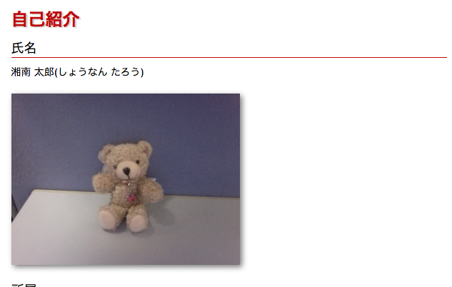
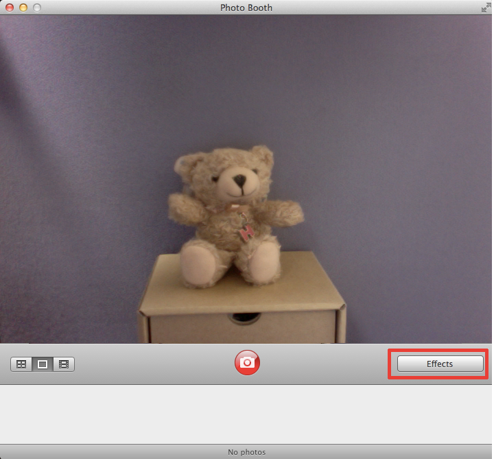
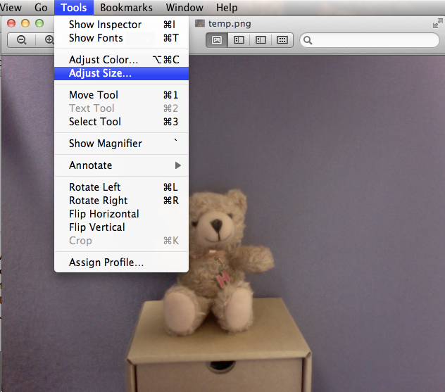
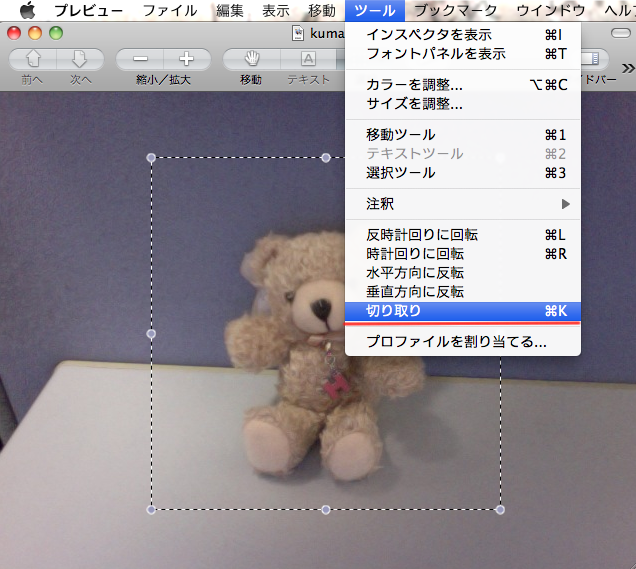
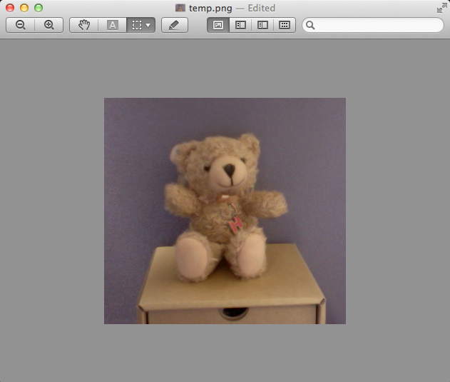
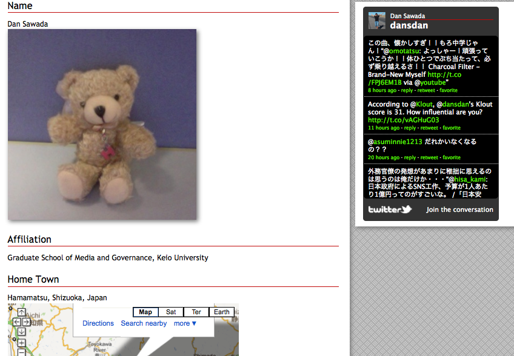
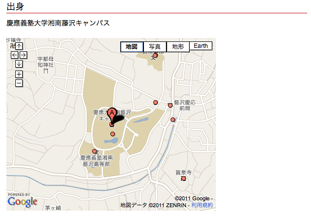
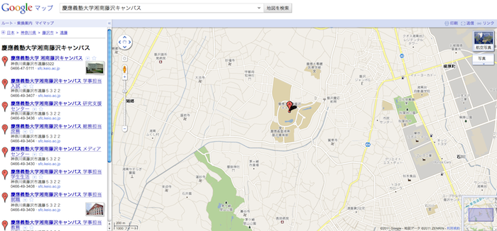
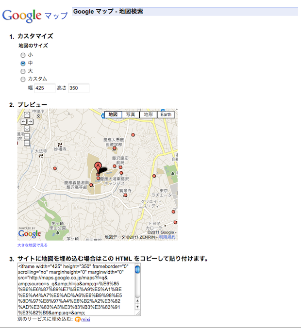
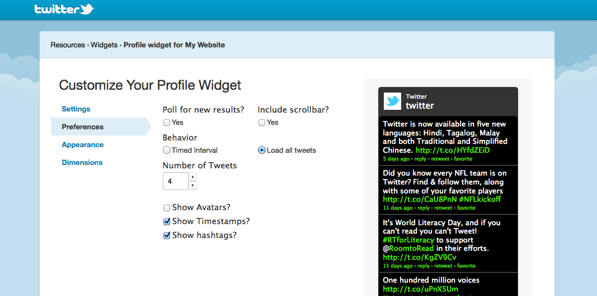

Lecture #7 : How To Add Images, Hyperlinks, and Third-Party Web Services
In the previous lectures, we have learned the basics of HTML and created a simple web page. In this lecture, we would learn how to place images, add hyperlinks, and embed third-party web services, such as Twitter and Facebook. The goal of this lecture is to make a self-introduction web page.
Placing Images
In the previous lectures, we have discussed mainly about HTML and the structure of web pages. In this lecture, we would discuss how to add multimedia contents (e.g. images, video clips, maps, etc.) to a web page.
Since the goal of this lecture is to create a self-introduction web page, the first step would be to add your name and picture.
Taking Pictures With Photo Booth
Open the "Finder", look for "Photo Booth" under the "Applications" folder, and double-click on the icon.
Photo Booth is a software that enables users to take pictures using the built-in camera on the iMac.
You can also add special effects to your picture from the "Effects" menu.
The pictures you have taken would be saved under: [Your home directory] -> "Pictures" -> "Photo Booth". The file names would be in Japanese, so rename the file using only alphabets (e.g. picture.jpg), since it's not good to use Japanese file names in web pages, .
Adjusting the Image Size
When you double-click on the file, the image would be opened by the "Preview" application. When your picture appears on the screen, you would probably notice that it is too large for web pages. You can resize your picture by selecting "Adjust Size" under the "Tools" menu. For now, resize it to 320 px (width) x 240 px (height).
Don't forget to save the picture (select "Save" under the "File" menu) after you have finished resizing it. You can also crop your picture using the "Preview" application. First, drag the mouse, and select the area that you wish to crop. Afterwards, select "Crop" from the "Tools" menu.
． 
Again, don't forget to save your picture after you have finished cropping it.．
Placing Images on Web Pages
Now that you have your picture ready, let's place it on to your web page. For placing images on to a web page we would use the "img" tag.
<img src="URL or Relative Path to Image file" alt="Alternative Name" />
The "alt" attribute defines an alternative name for the image. It would appear on the screen as a text if the image file was unable to load. In the following example, the HTML file is stored under the "resources" directory, and the image file (taro_picture.jpg) is stored under the "images" directory. Therefore, the relative path of the image file would be "../image/bob_picture.jpg", from the perspective of the HTML file.
<!DOCTYPE html>
<html>
<head>
<title>03-02</title>
</head>
<body>
<img src="../images/taro_picture.jpg" alt="TARO" />
</body>
</html>
Open the sample code with a browser
If the text defined as the "Alternative Name" appears instead of the image, check if the actual image file exists under the defined location.
Hyperlinks
As a key feature of web pages, there are hyperlinks (a.k.a. "links"), which enables users to jump to another page by clicking on them.
Creating Hyperlinks
For creating hyperlinks, the "a" tag is used. As briefly discussed in the previous lecture, the "a" tag requires a "href" attribute, which defines the relative path or URL of the destination. All the elements within the "a" tag would become hyperlinks. This also means that images may also become hyperlinks, as well as regular text.
<!DOCTYPE html>
<html>
<head>
<title>03-01</title>
</head>
<body>
<ul>
<li><a href="../lecture01.html">Lecture #5 Materials</a></li>
<li><a href="http://www.sfc.keio.ac.jp/">Official SFC Web Site</a></li>
<li>
<a href="http://www.google.co.jp/">
<img src="http://www.google.co.jp/images/logos/ps_logo2.png"
alt="google logo" />
</a>
</li>
</ul>
</body>
</html>
Open the sample code with a browser
Embedding Third-Party Web Services
You may see things called "web parts" or "widgets" on some of the new web pages. These are features that enable users to add information from third-party web services (e.g. Twitter, Facebook, and many more...) to their own web pages. In this section, we would discuss how to embed such services to a web page.
What Are Third-Party Web Services?
Currently, many people use Twitter, for example, to "tweet" what he or she is doing right now. Some may use Google Maps to look for a place to eat, while others use Facebook to share their pictures with friends and family members. Some of these web services provide features which enable users to embed the information from such services to their own web page. These features may be very useful upon enriching your web page, so consider using them based on what kind of information you want to share.
Sharing Your Favorite Place With Google Maps
Google Maps is a web service which enables users to search and view the map of any place around the globe. Google Maps also enable users to add maps to their own web page. As a practice, lets add a map that pin points the location of your favorite place.

First of all, enter the name or address of your favorite shop in the search window of Google Maps (http://maps.google.com/).
Next, click on the "Customize and preview embedded map" link under the "Link" menu (icon with a picture of a chain) located on the top right corner of the screen.
Adjust the size of the map, and copy the HTML code located at the bottom. Then, paste the code to your original page.
When you add the codes from the Google Maps widget, you may encounter some errors when validating the page through the W3C Markup Validation Service. If you do, add a property for the "iframe" tag in your CSS file, and delete the corresponding parts from your HTML file.
CSS File
iframe {
frameborder: 0;
scrolling: no;
marginheight: 0;
marginwidth: 0;
}
HTML File
<iframe width="425" height="350" src="XXXXXXXX">
Embedding the Twitter Widget
Twitter is one of the most popular micro-blogging service worldwide. As mentioned above, Twitter also provides widgets for showing real-time "tweets" on your orignal page. In order to embed the Twitter Widget, access the Twitter Widget Web Site to begin with.
Select the type of widget you wish, and customize it to your preferences. When everything is finished, cilck on "Finish & Grab Code". Finally, copy and paste the code to your own orignal HTML file, as it was with the Google Maps widget.
Exercise
Embed a map from Google Maps and a widget from Twitter to your web page, and see how it works.